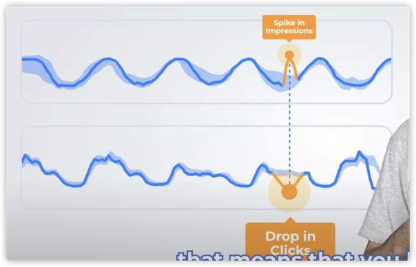

目录
- chapter0 概览
- chapter1 故障发现
- chapter2 故障定位
- chapter3 故障恢复
异常检测相关问题和技术的综述
异常检测的难点
业务共性
- 历史数据有中断—使用正常数据填充
- 不同业务曲线对告警的敏感度不一样
- 新接进来业务，历史数据太少
- 新接业务没有故障
某些业务特有
- 整体趋势变化：比如游戏在线人数进入开学季之后会持续走低，业务觉得很正常，不要告警（一般算法都要告警）。
- 定时任务日志数：周期性凸起，业务说不要告（但是一般的算法都会告）
- 无规律指标的异常识别：常见于刚上线的大区，不稳定。
- 周期性毛刺点并且间隔不固定：数据质量问题。
- 稀疏数据：比如成交数据，商品只在某个固定时间上架。
异常分类
有几类异常：全局异常，条件异常
全局异常
- 全局异常点有点像黑天鹅事件，过去没发生过的。
条件异常
条件异常(contextual or conditional anomalies)：value deviates quite a lot from the rest of the data points，举2个例子：
- 办公室出现了一个穿西装打领带的人，跟我们格格不入，但是放到另外一个context中，比如房屋中介行业很正常
- 凌晨销量突然升高

联合异常

每一个点不是异常的（既非 contextual 也非 global），但是一起出现就异常了，例如
- 一个小区中，有人去医院很正常，但是整个小区的人同时去医院就不正常了。
- 投放广告时，预算增加，曝光和点击同时上升是很正常的。但是曝光增加，点击却下降（市场营销策略失灵--glitch）就意味着有问题，可能是广告中心设置了一个空的广告位，或者将广告曝光给了错误的用户。 
用户在使用过程中的疑问
模型开发者
模型开发者关心的是
- 为什么告警？
- 告警时，知道特征有什么变化，在模型输出的时候，把特征也带上
- 屏蔽周期性的告警
模型应用者
模型服务的使用者关心的是
- 应用时的阈值的修改记录在哪看？
- 当前模型是不是最新版本？
- 为什么告警？
- 模型开发者需要在输出中加入告警描述字段
- 可视化saas，对告警的决策逻辑进行解释，eg上下界
- 这么多模型，我该选择哪一个？
- 业务相关的需求：
- 屏蔽周期性的告警。
[TOC]
时序异常检测
时序异常检测就是对时间序列数据监测出异常的模式。
但是，很难用一些策略去构建一个通用的异常检测服务，因为监控指标各异（正常模式各异），异常各异（异常类型多种）。其中，比较难识别的几种曲线和异常如下：
应用案例
1.历史数据有中断缺失
指标：在线数据由于数据质量有中断缺失 正常模式： 历史数据有缺失 检测策略：先使用正常数据填充再检测。

2.整体趋势变化：趋势漂移是正常模式。
指标： 游戏收入 正常模式：游戏收入在开学季趋势漂移（正常模式很奇怪）。 检测策略：学习并且剔除这个趋势漂移。

3.指标： 定时任务日志数
正常模式：周期性有数据。（正常模式很奇怪） 检测策略：检测规律行为数据缺失

4.合理范围的突变异常。
指标：登录在线等周期性曲线 正常模式：趋势呈周期性 检测策略：检测突变点。

5.无规律指标识别。
指标：毫无规律指标 正常模式：在一定统计范围内波动 异常检测策略：相对历史分布的极端异常值。

6.周期性毛刺点-且周期间隔不明显
指标：跑批数据 正常模式：周期性毛刺点，但是周期间隔不明显，可能会有偏移（正常模式很奇怪）。 检测策略：使用高斯核函数拟合分布极值？
- 使用dtw去衡量两个窗口的距离，兼容偏差。
- 在历史数据中使用滚动窗口的方法，找到一个最近的窗口。

7. 周期性跌零数据
指标：银行的业务数据 正常模式：周期性跌零，周期性有数据

如何获取曲线的关键特征：
- 周期性： autocorrelation
- 周期offset：高斯核函数拟合分布极值
- 趋势判断：指数滑动平均
- 分析数据极值: 假设检验。

一些架构调研


难点1：周期性陡增/降引起的误告
业务活动特性导致的周期性陡增和陡降怎么避免误告？
在时间上去收敛
使用特征去做模式识别（余弦相似度，比较两两之间的余弦距离），下面用的方法是用余弦相似度去刻画勾勾的形状，但是实时检测的时候，勾勾还没来要怎么做，历史数据里面的勾勾有偏移怎么办？
余弦相似度比欧式距离这种好的地方。。在于可以解决时间上出现偏移的问题。

总结
时序异常检测的难点在于，每一个时刻的异常情况都是context-based，但是这个context非常不好描述。
这个context需要包含的信息有：
用来刻画该曲线的正常模式的特征（包含是否有趋势周期性，是否有随时间波动的方差， 是否波动剧烈）----（特征选择：这些特征，来描述“异常/正常行为”
用来判断该时刻是否异常的参考信息。（特征计算）
曲线平滑对参数极为敏感
开发流程

注入的异常为
由于曲线的毛刺比较多，这里使用局部加权回归的方法。
但是该方法对参数极为敏感，
不合适的参数如下：(frac=0.0252, it=2)

合适的参数(frac=0.2, it=2)

timestamp,dim1,dim2,dim3,dim4,dim5 2018-10-03 17:25:00,16,0,0,0,0
mcts跑出来的结果
{"1538558700": [[8.946669749442899, [[0, 0, 0, 0, 3]]]]}